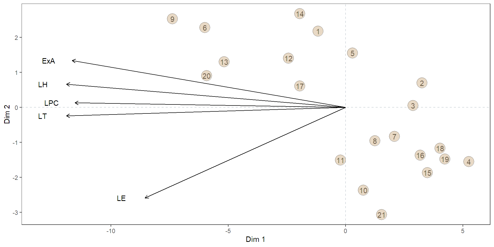

Álgebra de matrices con R y RStudio
Aplicación con datos biologícos
Introducción.
Primer caso de aplicación - reducción de dimensiones.
En este caso se emplean los fundamentos del álgebra de matrices para caracterizar las unidades de estudios a partir de la información de la matriz de datos, visualizandolas en un espacio de dismensiones reducidos con poca perdida de la variabilidad. Esto es lo que se conoce como análisis de componenetes principales.
Segundo caso de aplicación - Clasificación de UE.
En este caso se emplean los fundamentos del álgebra de matrices para encontrar una función de clasificación que permita distringuir entre dos grupos de acuerdo con la información de la matriz de datos. Esto es lo que se conoce como análisis discriminante lineal.
Contexto de los datos.
La matriz “hembras_Gorriones.xlsx” contiene información morfométrica de individuos hembras colectados tras una tormentan. Las variables consideradas fueron las siguientes variables:
Estado (1=Viva, 0= Muerta)
Longitud total (mm)
Extensión del ala (mm)
Longitud del pico a la cabeza (mm)
Longitud de húmero (mm)
Longitud de esternón (mm)
Importar - datos.
Caso de aplicación 1- Reducción de dimensiones.
Matrices AMV requeridas.
Matriz de datos \((M_D)\).
Matriz centrada de datos \((M_C)\).
Matriz de correlaciones \((R)\).
Matriz rotada \((M_R)\).
Procedimiento.
Defina y/o calcule las matrices básicas del AMV requeridas.
Calcule los valores propios de la matriz de correlaciones \((R)\) y su proporcionalidad.
Visualice y analice la matriz rotada \((M_R)\)
Matriz de datos.
Trabajaremos este primer caso de aplicación con las hembras vivas despúes de la tormenta.
Matriz centrada de datos - MC
Longitud_T Ext_Ala Long_Pico-Cabeza Long_Húmero Long_Estérnon
[1,] -1.38 4 0.17 0.0 -0.31
[2,] -3.38 -1 -1.03 -0.6 -1.21
[3,] -4.38 -1 -0.43 -0.1 -0.21
[4,] -4.38 -5 -0.53 -0.8 -0.61
[5,] -2.38 2 0.07 0.1 -0.51
[6,] 5.62 6 0.57 0.5 0.09Valores y vectores propios
[,1] [,2]
[1,] 3.2539806 65.079612
[2,] 0.7757359 15.514718
[3,] 0.4027432 8.054865
[4,] 0.3485476 6.970952
[5,] 0.2189927 4.379854Matriz rotada - MR
[,1] [,2] [,3] [,4] [,5]
[1,] -1.18 2.17 -0.95 -0.82 3.22
[2,] 3.25 0.69 -0.54 -1.97 0.33
[3,] 2.87 0.05 -0.74 -3.36 0.58
[4,] 5.25 -1.55 0.57 -3.34 -2.02
[5,] 0.30 1.55 -0.74 -1.75 1.96
[6,] -6.00 2.28 -0.29 4.59 2.41Proyección de la matriz rotada - Ajustes.
Proyección de la matriz rotada - Figura.
#Gáfico.
ggplot(data = MR,mapping = aes(x = V1,y = V2))+
geom_hline(yintercept = 0,linetype=2, color="#ced4da")+
geom_vline(xintercept = 0,linetype=2, color="#ced4da")+
geom_text(label=row.names(MR),color="black")+
geom_point(fill="tan",size=7,alpha=0.5, shape=21)+
geom_segment(data=B, aes(x = 0, y = 0,
xend = v1*25, yend = v2*3),col="black",
arrow = arrow(length = unit(0.2,"cm")))+
geom_text(data=B,aes(x = v1*25-1, y=v2*3),
label=c("LT", "ExA", "LPC","LH", "LE"))+
theme_test()+labs(x="Dim 1", y="Dim 2")Proyección de la matriz rotada - Figura.

Caso de aplicación 2- Clasificación de UE.
Matrices AMV requeridas.
Matriz de datos \((X)\).
Vector de media de cada uno de los grupos \((V_M)\)
Matriz de varianzas - covarianzas por cada grupos \((S)\)
Matriz de varianzas - covarianzas conjunta \((S_p)\)
Procedimiento.
Defina y/o calcule las matrices básicas del AMV requeridas.
Calcule las puntuaciones y los coeficientes de la función de discriminanción \((W)\).
Visualice y analice la bondad de la función de discriminación.
Matrices de datos.
Vectores de medias- \((V_M)\).
Matriz de var-cov conjunta - \((S_p)\).
\[ \frac{1}{n-2}*[((n_1-1)*S_1)+((n_2-1)*S_2)] \]
Longitud_T Ext_Ala Long_Pico-Cabeza Long_Húmero Long_Estérnon
Longitud_T 13.36 13.75 1.95 1.37 2.23
Ext_Ala 13.75 26.15 2.76 2.25 2.71
Long_Pico-Cabeza 1.95 2.76 0.64 0.35 0.42
Long_Húmero 1.37 2.25 0.35 0.32 0.35
Long_Estérnon 2.23 2.71 0.42 0.35 1.00Función discriminante- Eq \((W)\).
\[ W= X *(\overline{X_A} -\overline{X_B})^{t}*S_p^{-1}-b \]
dónde, \[b= \vec{1} * \frac{1}{2} * (\overline{X_A}+\overline{X_B})^{t} * S_p^{-1} * (\overline{X_A}-\overline{X_B})\] \[L=S_p^{-1}*(\overline{X_A} -\overline{X_B})^{t}\]
Función discriminante- \((W)\).
Tabla de validación cruzada de la clasificación.
Gráfico - Clasificación.
Gráfico - Variables.
variable1<-data.frame(V1=L[,1],Var.name=rownames(L))
p2<-ggplot(data = variable1,aes(y=V1, x=Var.name))+
geom_segment(aes(y = 0, yend=V1),col="blue",
arrow = arrow(length = unit(0.1,"cm")))+
geom_hline(yintercept = 0,linetype=2,col="gray")+
geom_text(aes(y=ifelse(V1>0,V1+0.1,V1-0.1),
label=Var.name))+
labs(x="", y="")+theme_test()+ylim(-1.5,1.5)+
theme(axis.text = element_text(color = "white"),
axis.ticks = element_blank())Gráfico - final.